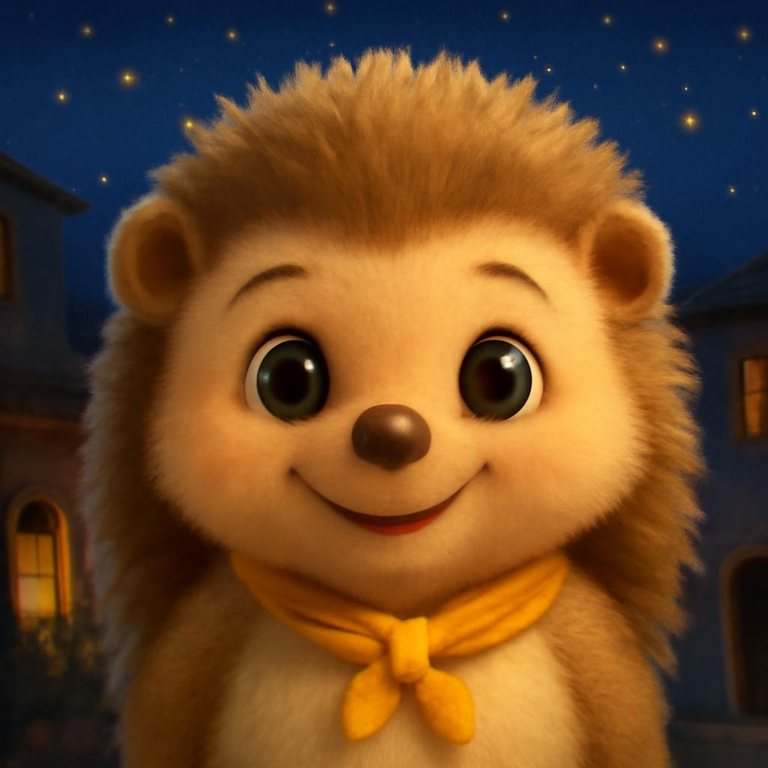

👆 Tipp mich an!
Alles hier bleibt auf diesem Handy.
Der Name bleibt auf dem Handy und geht nie ans Internet, auch nicht im Live-Gespräch.
Länge eines Gesprächs:
Danach sagt Otti freundlich Tschüss und legt auf.
Was gefällt, was fehlt? Bleibt auf dem Handy, bis du es weitergibst.

Im Live-Gespräch hört Otti wirklich zu. Dafür geht die Stimme deines Kindes über das Internet an den Sprachdienst ElevenLabs (USA), der Ottis Antwort macht.
Bitte sei dabei und lass dein Kind keinen Nachnamen, keine Adresse und keine Telefonnummer sagen. Auf diesem Handy merkt sich Otti nur kurze Notizen, die du jederzeit löschen kannst.